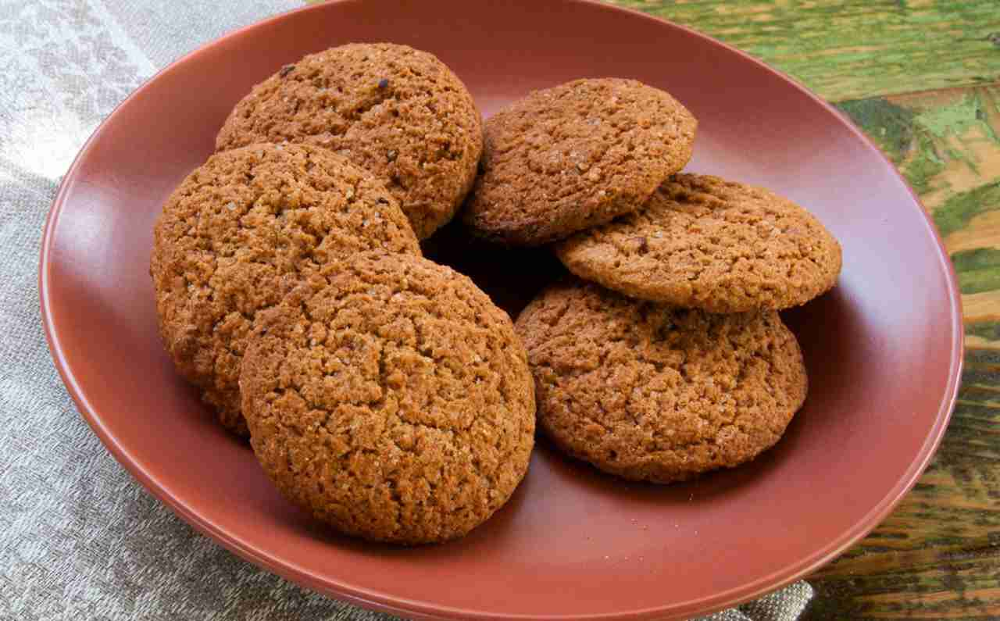
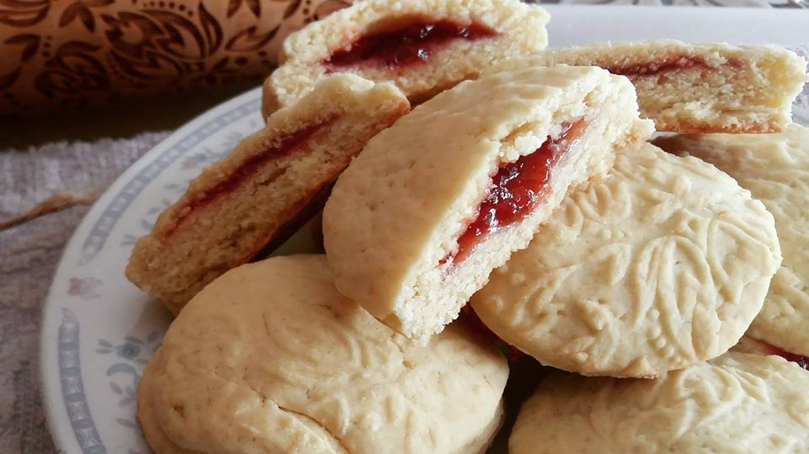

MODALITÀ DI RACCOLTA DATI
per tornare indietro clicca QUI
⠀
SEZIONE 1
Nel canto XVIII (versi 116-117, 130-133) Dante incontra Alessio Interminelli da Lucca e Taide che sono coperti di sterco fino a sopra il capelli. Sono adulatori, termine che traduce il moderno leccaculo, per cui forse si capisce il contrappasso: “…VIDI UNO CON LA TESTA COSÌ SPORCA DI MERDA CHE NON CAPIVO SE FOSSE UN LAICO O UN ECCLESIASTICO…”

⠀
SEZIONE 2

Nel canto XVIII (versi 116-117, 130-133) Dante incontra Alessio Interminelli da Lucca e Taide che sono coperti di sterco fino a sopra il capelli. Sono adulatori, termine che traduce il moderno leccaculo, per cui forse si capisce il contrappasso
⠀
SEZIONE 3
Nel canto XVIII (versi 116-117, 130-133) Dante incontra Alessio Interminelli da Lucca e Taide che sono coperti di sterco fino a sopra il capelli. Sono adulatori, termine che traduce il moderno leccaculo, per cui forse si capisce il contrappasso: “…VIDI UNO CON LA TESTA COSÌ SPORCA DI MERDA CHE NON CAPIVO SE FOSSE UN LAICO O UN ECCLESIASTICO…”